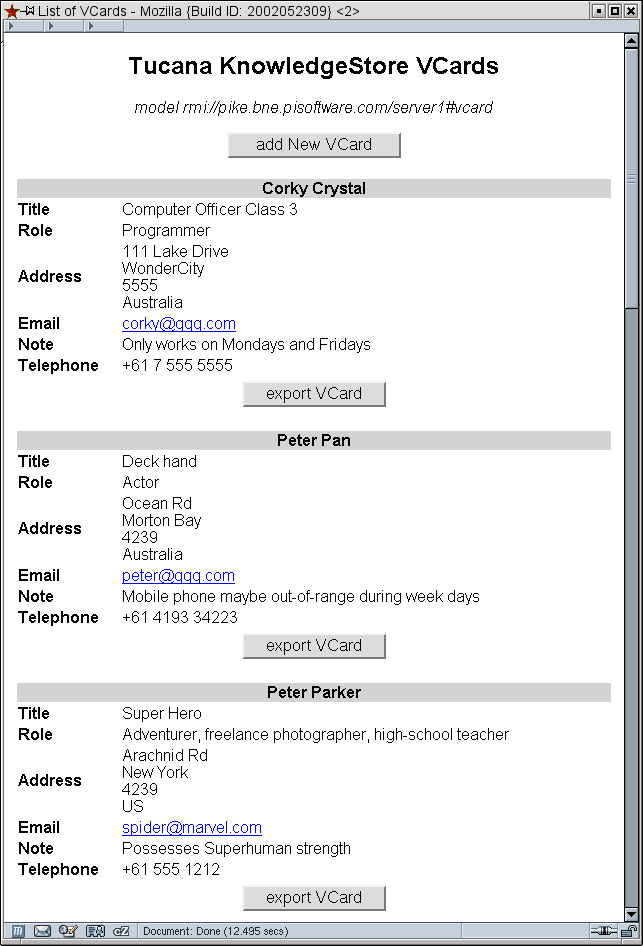
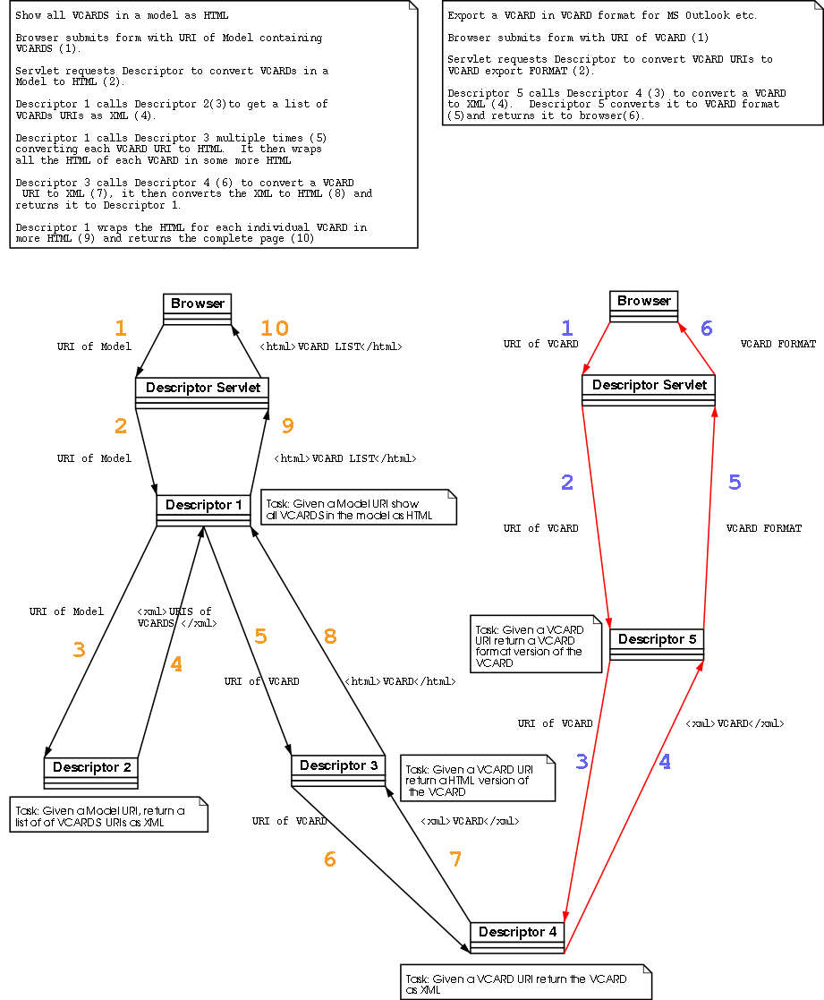

Mulgara Descriptor VCard Example
Overview
This example uses several descriptors to generate a HTML page containing all the VCards in a specified Mulgara Model. Furthermore the VCard can be exported from Mulgara in VCard format which is used by applications such as Netscape Address book, MS Outlook etc. New VCards can be entered from a HTML interface.Here is a sample screenshot.

Clicking on 'export VCard' will send a file similar to the one below to your browser, depending on configuration your browser may ask you to save it or it may pass it off to an external application such as MS Outlook.
BEGIN:VCARDThis example uses 7 descriptors which perform a variety of tasks, clicking on the link will show the descriptor source in a new window.
VERSION:2.1
FN:Corky Crystal
TITLE:Computer Officer Class 3
ROLE:Programmer
ADR;WORK:; 111 Lake Drive ; WonderCity ; 5555 ; Australia
LABEL;WORK;ENCODING=QUOTED-PRINTABLE: 111 Lake Drive =0D=0A WonderCity =0D=0A 5555 Australia
EMAIL;PREF;INTERNET:corky@qqq.com
NOTE:Only works on Mondays and Fridays
TEL;WORK;VOICE:+61 7 555 5555
END:VCARD
- Given a Model show all VCards in that model as HTML
- Given a Model return a list of VCards URIs in that model as XML
- Given a VCard URI return a HTML version of the VCard
- Given a VCard URI return a XML version of the VCard
- Given a
VCard URI return a VCard Format version of the VCard
- Given VCard
parameters insert a VCard into a Mulgara model
- Given a model
return a HTML page which will take VCard parameters and insert them into Mulgara model
The diagram below shows some of the the relationships between these descriptors which demonstrate reusability.

Note that Descriptor 4 (Given a VCard URI return the VCard as XML) is used by both browser tasks. This is to demonstrate the reusability of well designed descriptors.
Try the Example
First you must load some VCard RDF into a model. Using the command line iTQL client or the Mulgara Web UI create a model for storing the VCards e.g.iTQL> create <rmi://localhost/server1#vcard>;
NOTE replace localhost with the fully qualified hostname of your Mulgara server.
Load some VCard RDF into this model, here is a sample file: vcards.rdf. Copy the link address and load it into the vcard model using an iTQL command such as this: iTQL> load <http://localhost:8080/webservices/descriptor/examples/vcard/vcards.rdf> into <rmi://localhost/server1#vcard>;
If you want to add more vcards download the rdf file, edit it and load it in using a file URL.
Make sure the default descriptors are loaded, this is a task available from the descriptor management page.
Now locate the Descriptor "Given a Model show all VCards in that model as HTML" from the task list of descriptors available from the descriptor management page.
Enter rmi://localhost/server1#vcard (replace localhost with the fully qualified hostname of your Mulgara server) as the model parameter and invoke and instance of the descriptor.